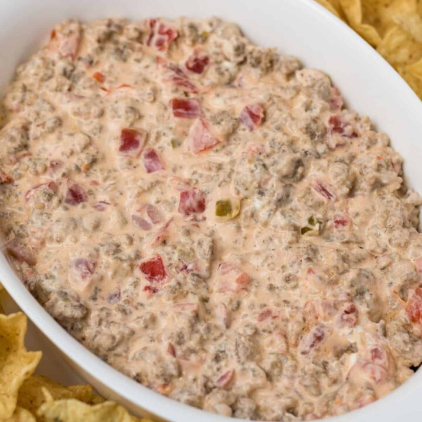

Rotel Sausage Dip

Description
Put some zing in your chip dipping experience with this super easy and ultra zingy sausage dip!
*WARNING* Do not take to work functions. This stuff is like crack cocaine, and there will never be enough no matter how many people are there.
Ingredients
- 1 pound Jimmy Dean sausage
- 10z Rotel diced tomatoes and green chilies, undrained
- 8oz cream cheese, cut into pieces
Steps
- In a large skillet over medium-high heat, cook sausage until crumbled and no longer pink. Drain.
- Add Rotel and cream cheese to skillet. Stir until cheese melts.
- Serve warm with tortilla chips.